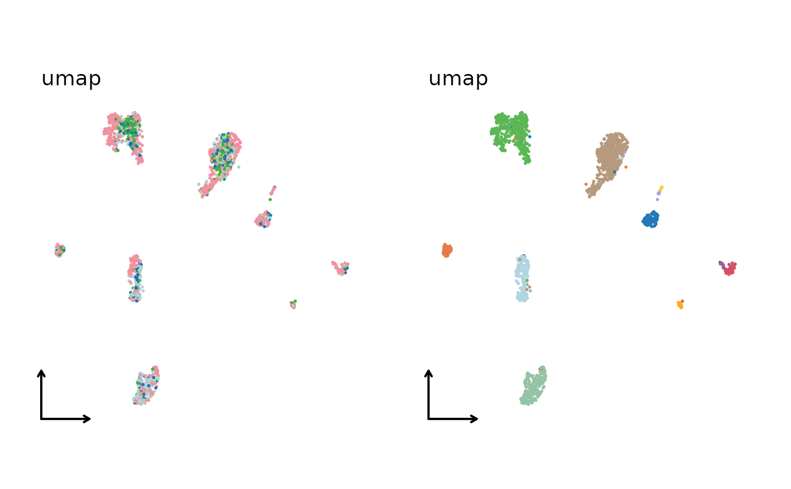
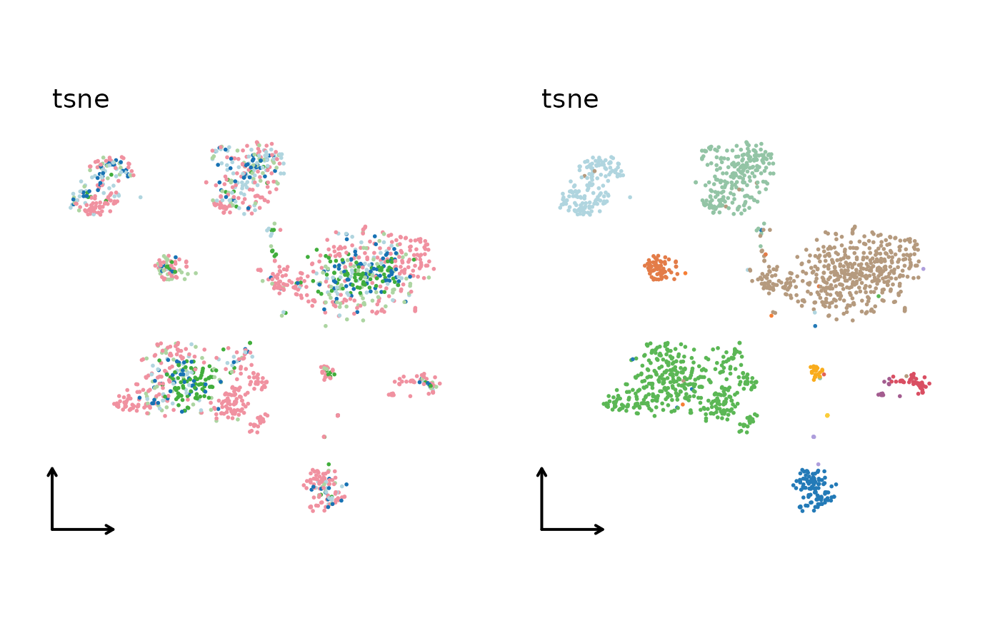
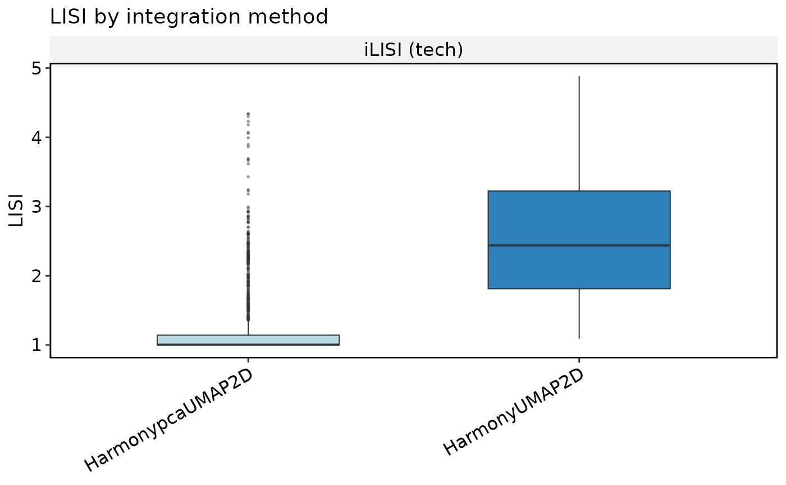
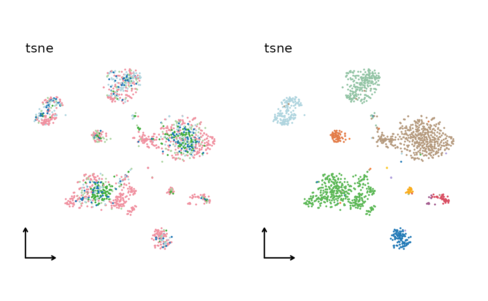
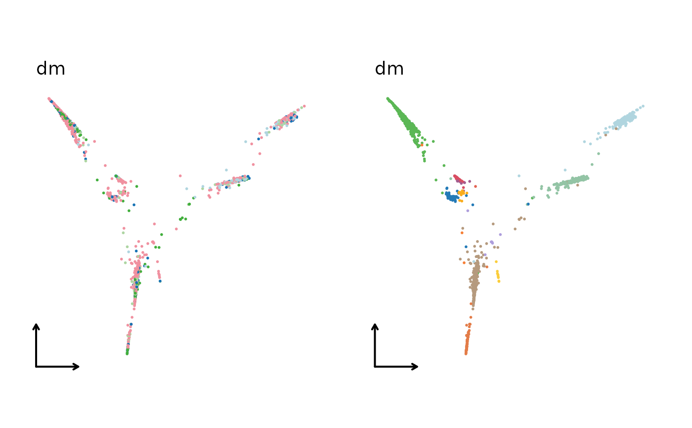
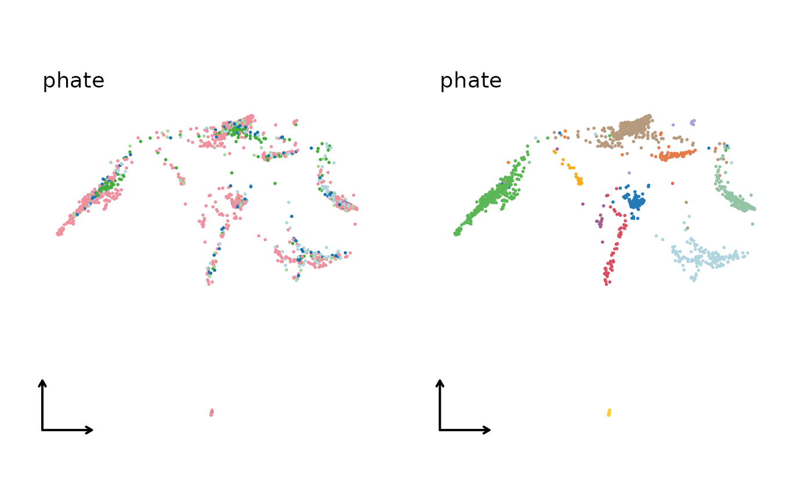
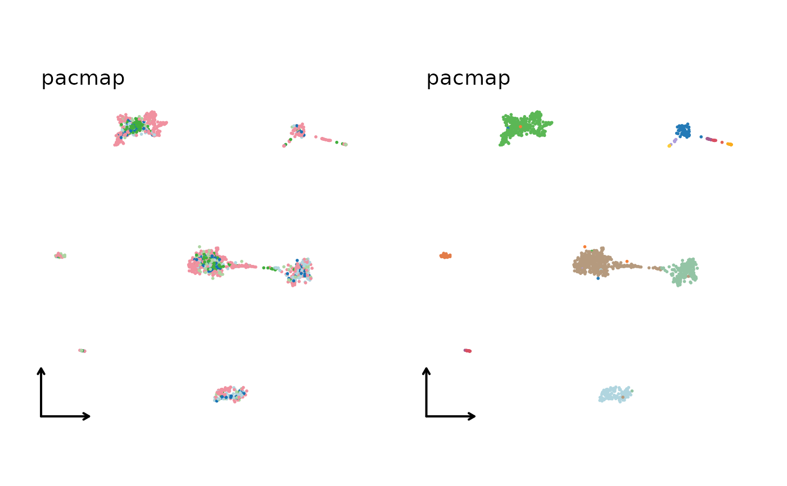
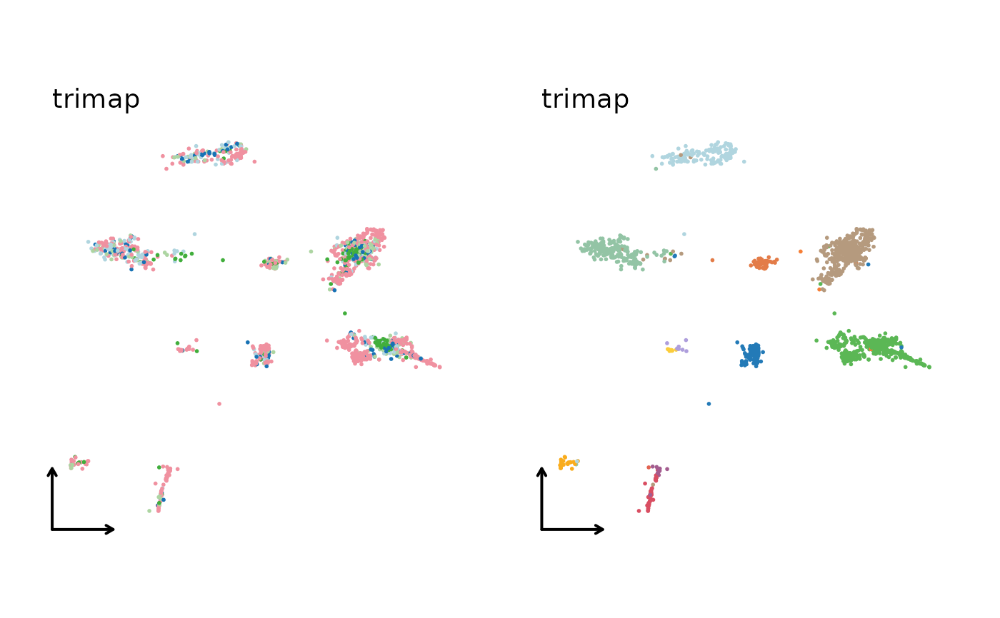
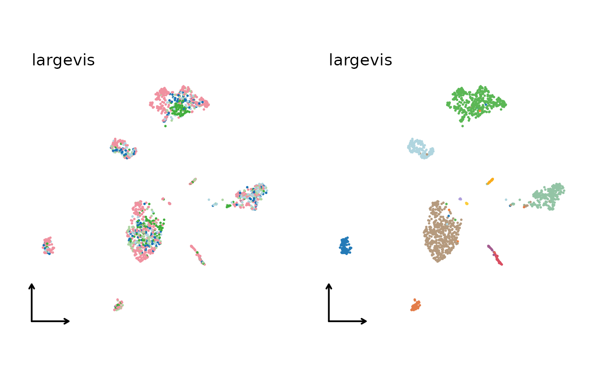
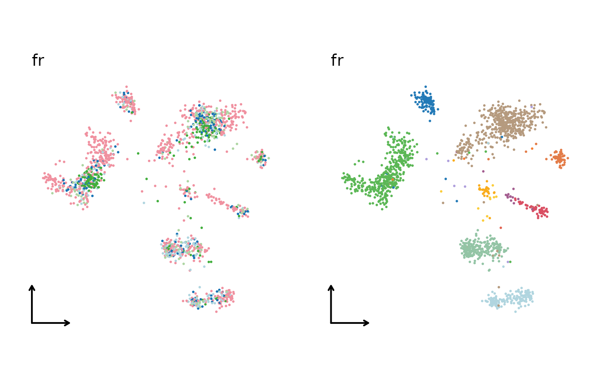

Integrate single-cell data with one or more methods. For ChromatinAssay,
the workflow uses TFIDF + SVD/LSI; Uncorrected is supported directly,
Harmony5 is redirected to Harmony, and Seurat/RPCA are not supported.
Usage
RunIntegration(
srt_merge = NULL,
batch,
append = TRUE,
srt_list = NULL,
assay = NULL,
integration_methods = c("Uncorrected", "Seurat", "CCA", "RPCA", "scVI", "PeakVI",
"PoissonVI", "WNN", "MultiMAP", "GLUE", "scVI5", "MNN", "fastMNN", "fastMNN5",
"Harmony", "Harmony5", "Scanorama", "BBKNN", "CSS", "Coralysis", "LIGER", "Conos",
"ComBat"),
compute_lisi = FALSE,
lisi_label_colnames = NULL,
lisi_reduction = NULL,
lisi_dims = NULL,
lisi_prefix = NULL,
lisi_tool_name = NULL,
lisi_perplexity = 30,
lisi_tol = 1e-05,
lisi_max_iter = 50,
lisi_knn_algorithm = c("auto", "brute_force", "clustered"),
lisi_cores = NULL,
lisi_max_dense_bytes = Inf,
compute_metrics = FALSE,
metrics_batch_col = NULL,
metrics_celltype_col = NULL,
metrics_reduction = NULL,
metrics_cluster_col = NULL,
metrics_tool_name = NULL,
metrics_k_graph = 15,
do_normalization = NULL,
normalization_method = "LogNormalize",
do_HVF_finding = TRUE,
HVF_source = "separate",
HVF_method = "vst",
nHVF = 2000,
HVF_min_intersection = 1,
HVF = NULL,
do_scaling = TRUE,
vars_to_regress = NULL,
regression_model = "linear",
scale_within_batch = FALSE,
linear_reduction = "pca",
linear_reduction_dims = 50,
linear_reduction_dims_use = NULL,
linear_reduction_params = list(),
force_linear_reduction = FALSE,
nonlinear_reduction = "umap",
nonlinear_reduction_dims = c(2, 3),
nonlinear_reduction_params = list(),
force_nonlinear_reduction = TRUE,
neighbor_metric = "euclidean",
neighbor_k = 20L,
cluster_algorithm = "louvain",
cluster_resolution = 0.6,
seed = 11,
verbose = TRUE,
integration_method = NULL,
...
)Arguments
- srt_merge
A merged `Seurat` object that includes the batch information.
- batch
Batch variable name.
- append
Append integrated results to
srt_merge.- srt_list
A list of
Seuratobjects to be checked and preprocessed.- assay
Assay to use.
NULLuses the default assay.- integration_methods
Method(s) to run. Multiple methods require
append = TRUEand are applied sequentially. ForChromatinAssay, prefer"Uncorrected"or"Harmony5".- compute_lisi, lisi_label_colnames, lisi_reduction, lisi_dims, lisi_prefix, lisi_tool_name, lisi_perplexity, lisi_tol, lisi_max_iter, lisi_knn_algorithm, lisi_cores, lisi_max_dense_bytes
LISI scores.
lisi_label_colnames = NULLusesbatchwhen it is a single metadata column;lisi_reduction = NULLusesDefaultReduction().- compute_metrics, metrics_batch_col, metrics_celltype_col, metrics_reduction, metrics_cluster_col, metrics_tool_name, metrics_k_graph
Integration summary metrics on the selected reduction.
- do_normalization
Whether data normalization should be performed.
- normalization_method
The normalization method to be used. Possible values are
"LogNormalize","SCT","TFIDF", and"scran".- do_HVF_finding, HVF_method, nHVF, HVF
Highly variable features.
HVF_methodis"vst","mvp","disp", or"scran".- HVF_source
The source of highly variable features. Possible values are
"global"and"separate".- HVF_min_intersection
The feature needs to be present in batches for a minimum number of times in order to be considered as highly variable.
- do_scaling
Force scaling via ScaleData.
- vars_to_regress
A vector of variable names to include as additional regression variables.
- regression_model
"linear","poisson", or"negativebinomial".- scale_within_batch
Scale within each batch. Only used by
"Uncorrected","Seurat","MNN","Harmony","BBKNN","CSS","ComBat".- linear_reduction, linear_reduction_dims, linear_reduction_dims_use, linear_reduction_params, force_linear_reduction
Linear reduction (
"pca","svd","ica","nmf","mds","glmpca").linear_reduction_dims_use = NULLuses estimated dimensions, else the first 50.- nonlinear_reduction
Nonlinear reduction (
"umap","umap-naive","tsne","dm","phate","pacmap","trimap","largevis","fr").- nonlinear_reduction_dims
Number(s) of nonlinear dimensions to compute.
- nonlinear_reduction_params
Shared parameters, optionally overridden by lists named after individual nonlinear reduction methods.
- force_nonlinear_reduction
Recompute nonlinear reductions even when stored results exist.
- neighbor_metric, neighbor_k
Neighbor graph (
"euclidean","cosine","manhattan","hamming").- cluster_algorithm, cluster_resolution
Clustering (
"louvain","slm","leiden"). Largercluster_resolutionyields fewer clusters.- seed
Random seed.
- verbose
Whether to print the message. Default is
TRUE.- integration_method
Deprecated alias of
integration_methods.- ...
Passed to the integration method functions.
Value
A Seurat object. For ChromatinAssay, names follow the ATAC
convention (*lsi, *UMAP2D, cluster aliases, ATAC_default_*).
Examples
data(panc8_sub)
panc8_sub <- RunIntegration(
panc8_sub,
batch = "tech",
integration_methods = "Harmony",
nHVF = 500,
linear_reduction_dims = 20,
linear_reduction_dims_use = 1:10,
nonlinear_reduction_dims = 2,
compute_lisi = TRUE,
lisi_label_colnames = "tech",
lisi_perplexity = 10
)
#> ◌ [2026-10-30 06:17:48] Run integration workflow...
#> ℹ [2026-10-30 06:17:48] Split `srt_merge` into `srt_list` by "tech"
#> ℹ [2026-10-30 06:17:48] Checking a list of <Seurat>...
#> ! [2026-10-30 06:17:49] Data 1/5 of the `srt_list` is "unknown"
#> ℹ [2026-10-30 06:17:49] Perform `NormalizeData()` with `normalization.method = 'LogNormalize'` on 1/5 of `srt_list`...
#> ℹ [2026-10-30 06:17:49] Perform `FindVariableFeatures()` on 1/5 of `srt_list`...
#> ! [2026-10-30 06:17:49] Data 2/5 of the `srt_list` is "unknown"
#> ℹ [2026-10-30 06:17:49] Perform `NormalizeData()` with `normalization.method = 'LogNormalize'` on 2/5 of `srt_list`...
#> ℹ [2026-10-30 06:17:49] Perform `FindVariableFeatures()` on 2/5 of `srt_list`...
#> ! [2026-10-30 06:17:49] Data 3/5 of the `srt_list` is "unknown"
#> ℹ [2026-10-30 06:17:49] Perform `NormalizeData()` with `normalization.method = 'LogNormalize'` on 3/5 of `srt_list`...
#> ℹ [2026-10-30 06:17:49] Perform `FindVariableFeatures()` on 3/5 of `srt_list`...
#> ! [2026-10-30 06:17:49] Data 4/5 of the `srt_list` is "unknown"
#> ℹ [2026-10-30 06:17:49] Perform `NormalizeData()` with `normalization.method = 'LogNormalize'` on 4/5 of `srt_list`...
#> ℹ [2026-10-30 06:17:49] Perform `FindVariableFeatures()` on 4/5 of `srt_list`...
#> ! [2026-10-30 06:17:49] Data 5/5 of the `srt_list` is "unknown"
#> ℹ [2026-10-30 06:17:49] Perform `NormalizeData()` with `normalization.method = 'LogNormalize'` on 5/5 of `srt_list`...
#> ℹ [2026-10-30 06:17:49] Perform `FindVariableFeatures()` on 5/5 of `srt_list`...
#> ℹ [2026-10-30 06:17:49] Use the separate HVF from `srt_list`
#> ℹ [2026-10-30 06:17:49] Number of available HVF: 500
#> ℹ [2026-10-30 06:17:50] Finished check
#> ℹ [2026-10-30 06:17:52] Perform `Seurat::ScaleData()`
#> ℹ [2026-10-30 06:17:52] Perform linear dimension reduction("pca")
#> ℹ [2026-10-30 06:17:52] Perform Harmony integration
#> ℹ [2026-10-30 06:17:52] Using "Harmonypca" (1:10) as input
#> ℹ [2026-10-30 06:17:53] Adjust neighbor k from 20 to 20 for small-sample clustering
#> ℹ [2026-10-30 06:17:53] Perform `Seurat::FindClusters()` with "louvain"
#> ℹ [2026-10-30 06:17:53] Reorder clusters...
#> ℹ [2026-10-30 06:17:53] Skip `log1p()` because `layer = data` is not "counts"
#> ℹ [2026-10-30 06:17:53] Perform umap nonlinear dimension reduction using Harmony (1:10)
#> ℹ [2026-10-30 06:18:01] Perform umap nonlinear dimension reduction using Harmonypca (1:10)
#> ℹ [2026-10-30 06:18:09] Compute LISI scores from reduction "HarmonypcaUMAP2D"
#> ℹ [2026-10-30 06:18:09] Compute LISI scores from reduction "HarmonyUMAP2D"
#> ✔ [2026-10-30 06:18:09] Stored LISI scores in metadata: "HarmonypcaUMAP2D_tech_LISI" and "HarmonyUMAP2D_tech_LISI"
#> ✔ [2026-10-30 06:18:09] Harmony integration completed
CellDimPlot(
panc8_sub,
group.by = c("tech", "celltype"),
reduction = "HarmonyUMAP2D"
)

IntegrationBenchmarkPlot(panc8_sub, plot_type = "box")

panc8_sub <- RunIntegration(
panc8_sub,
batch = "tech",
integration_methods = "LIGER"
)
#> ◌ [2026-10-30 06:18:10] Run integration workflow...
#> ℹ [2026-10-30 06:18:10] Split `srt_merge` into `srt_list` by "tech"
#> ℹ [2026-10-30 06:18:11] Checking a list of <Seurat>...
#> ℹ [2026-10-30 06:18:11] Data 1/5 of the `srt_list` has been log-normalized
#> ℹ [2026-10-30 06:18:11] Perform `FindVariableFeatures()` on 1/5 of `srt_list`...
#> ℹ [2026-10-30 06:18:12] Data 2/5 of the `srt_list` has been log-normalized
#> ℹ [2026-10-30 06:18:12] Perform `FindVariableFeatures()` on 2/5 of `srt_list`...
#> ℹ [2026-10-30 06:18:12] Data 3/5 of the `srt_list` has been log-normalized
#> ℹ [2026-10-30 06:18:12] Perform `FindVariableFeatures()` on 3/5 of `srt_list`...
#> ℹ [2026-10-30 06:18:12] Data 4/5 of the `srt_list` has been log-normalized
#> ℹ [2026-10-30 06:18:12] Perform `FindVariableFeatures()` on 4/5 of `srt_list`...
#> ℹ [2026-10-30 06:18:12] Data 5/5 of the `srt_list` has been log-normalized
#> ℹ [2026-10-30 06:18:12] Perform `FindVariableFeatures()` on 5/5 of `srt_list`...
#> ℹ [2026-10-30 06:18:13] Use the separate HVF from `srt_list`
#> ℹ [2026-10-30 06:18:13] Number of available HVF: 2000
#> ℹ [2026-10-30 06:18:13] Finished check
#> ℹ [2026-10-30 06:18:13] Prepare rliger layer "ligerScaleData" ...
#> ℹ [2026-10-30 06:18:13] Perform LIGER integration
#> ℹ [2026-10-30 06:18:19] Adjust neighbor k from 20 to 20 for small-sample clustering
#> ℹ [2026-10-30 06:18:19] Perform `Seurat::FindClusters()` with "louvain"
#> ℹ [2026-10-30 06:18:19] Reorder clusters...
#> ℹ [2026-10-30 06:18:19] Skip `log1p()` because `layer = data` is not "counts"
#> ℹ [2026-10-30 06:18:19] Perform umap nonlinear dimension reduction using LIGER (1:20)
#> ℹ [2026-10-30 06:18:27] Perform umap nonlinear dimension reduction using LIGER (1:20)
#> ℹ [2026-10-30 06:18:35] Perform umap nonlinear dimension reduction using LIGER (1:20)
#> ✔ [2026-10-30 06:18:43] LIGER integration completed
panc8_sub <- RunIntegration(
panc8_sub,
batch = "tech",
integration_methods = "Harmony",
compute_lisi = TRUE,
lisi_label_colnames = "tech"
)
#> ◌ [2026-10-30 06:18:43] Run integration workflow...
#> ℹ [2026-10-30 06:18:44] Split `srt_merge` into `srt_list` by "tech"
#> ℹ [2026-10-30 06:18:45] Checking a list of <Seurat>...
#> ℹ [2026-10-30 06:18:45] Data 1/5 of the `srt_list` has been log-normalized
#> ℹ [2026-10-30 06:18:45] Perform `FindVariableFeatures()` on 1/5 of `srt_list`...
#> ℹ [2026-10-30 06:18:45] Data 2/5 of the `srt_list` has been log-normalized
#> ℹ [2026-10-30 06:18:45] Perform `FindVariableFeatures()` on 2/5 of `srt_list`...
#> ℹ [2026-10-30 06:18:45] Data 3/5 of the `srt_list` has been log-normalized
#> ℹ [2026-10-30 06:18:45] Perform `FindVariableFeatures()` on 3/5 of `srt_list`...
#> ℹ [2026-10-30 06:18:46] Data 4/5 of the `srt_list` has been log-normalized
#> ℹ [2026-10-30 06:18:46] Perform `FindVariableFeatures()` on 4/5 of `srt_list`...
#> ℹ [2026-10-30 06:18:46] Data 5/5 of the `srt_list` has been log-normalized
#> ℹ [2026-10-30 06:18:46] Perform `FindVariableFeatures()` on 5/5 of `srt_list`...
#> ℹ [2026-10-30 06:18:46] Use the separate HVF from `srt_list`
#> ℹ [2026-10-30 06:18:46] Number of available HVF: 2000
#> ℹ [2026-10-30 06:18:46] Finished check
#> ℹ [2026-10-30 06:18:46] Perform `Seurat::ScaleData()`
#> ℹ [2026-10-30 06:18:46] Perform linear dimension reduction("pca")
#> ℹ [2026-10-30 06:18:47] Perform Harmony integration
#> ℹ [2026-10-30 06:18:47] Using "Harmonypca" (1:20) as input
#> ℹ [2026-10-30 06:18:47] Adjust neighbor k from 20 to 20 for small-sample clustering
#> ℹ [2026-10-30 06:18:48] Perform `Seurat::FindClusters()` with "louvain"
#> ℹ [2026-10-30 06:18:48] Reorder clusters...
#> ℹ [2026-10-30 06:18:48] Skip `log1p()` because `layer = data` is not "counts"
#> ℹ [2026-10-30 06:18:48] Perform umap nonlinear dimension reduction using Harmony (1:20)
#> ℹ [2026-10-30 06:18:56] Perform umap nonlinear dimension reduction using Harmony (1:20)
#> ℹ [2026-10-30 06:19:03] Perform umap nonlinear dimension reduction using Harmonypca (1:20)
#> ℹ [2026-10-30 06:19:11] Compute LISI scores from reduction "HarmonypcaUMAP2D"
#> ℹ [2026-10-30 06:19:11] Compute LISI scores from reduction "HarmonyUMAP2D"
#> ✔ [2026-10-30 06:19:11] Stored LISI scores in metadata: "HarmonypcaUMAP2D_tech_LISI" and "HarmonyUMAP2D_tech_LISI"
#> ✔ [2026-10-30 06:19:12] Harmony integration completed
IntegrationBenchmarkPlot(panc8_sub, plot_type = "box")

data("pbmcmultiome_sub", package = "scop")
pbmcmultiome_sub$batch <- rep(c("batch1", "batch2"), length.out = ncol(pbmcmultiome_sub))
pbmcmultiome_sub <- RunIntegration(
pbmcmultiome_sub,
batch = "batch",
assay = "peaks",
integration_methods = "Harmony5",
normalization_method = "TFIDF"
)
#> ◌ [2026-10-30 06:19:12] Run integration workflow...
#> ! [2026-10-30 06:19:12] `integration_method = 'Harmony5'` is not compatible with <ChromatinAssay> in current Seurat v5 workflow. Automatically switch to "Harmony"
#> ℹ [2026-10-30 06:19:12] Split `srt_merge` into `srt_list` by "batch"
#> ℹ [2026-10-30 06:19:12] Checking a list of <Seurat>...
#> ! [2026-10-30 06:19:12] Data 1/2 of the `srt_list` is "raw_counts"
#> ℹ [2026-10-30 06:19:12] Perform `RunTFIDF()` on 1/2 of `srt_list`...
#> ℹ [2026-10-30 06:19:12] Perform `FindTopFeatures()` on 1/2 of `srt_list`...
#> ! [2026-10-30 06:19:13] Data 2/2 of the `srt_list` is "raw_counts"
#> ℹ [2026-10-30 06:19:13] Perform `RunTFIDF()` on 2/2 of `srt_list`...
#> ℹ [2026-10-30 06:19:13] Perform `FindTopFeatures()` on 2/2 of `srt_list`...
#> ℹ [2026-10-30 06:19:13] Use the separate HVF from `srt_list`
#> ℹ [2026-10-30 06:19:13] Number of available HVF: 2000
#> ℹ [2026-10-30 06:19:13] Finished check
#> ℹ [2026-10-30 06:19:13] `normalization_method` is "TFIDF". Use lsi workflow...
#> ℹ [2026-10-30 06:19:13] Perform linear dimension reduction("svd")
#> Running SVD
#> Scaling cell embeddings
#> ℹ [2026-10-30 06:19:14] Perform Harmony integration
#> ℹ [2026-10-30 06:19:14] Using "Harmonysvd" (2:5) as input
#> ℹ [2026-10-30 06:19:14] Perform `Seurat::FindClusters()` with "louvain"
#> ℹ [2026-10-30 06:19:14] Reorder clusters...
#> ℹ [2026-10-30 06:19:14] Skip `log1p()` because `layer = data` is not "counts"
#> ℹ [2026-10-30 06:19:14] Perform umap nonlinear dimension reduction using Harmony (1:4)
#> ℹ [2026-10-30 06:19:21] Perform umap nonlinear dimension reduction using Harmony (1:4)
#> ✔ [2026-10-30 06:19:28] Harmony integration completed
integration_methods <- c(
"Uncorrected", "Seurat", "CCA", "RPCA",
"MNN", "fastMNN", "Harmony", "Harmony5",
"Coralysis", "LIGER", "Conos", "ComBat"
)
p_list <- list()
for (method in integration_methods) {
panc8_sub <- RunIntegration(
panc8_sub,
batch = "tech",
integration_methods = method,
linear_reduction_dims_use = 1:50,
nonlinear_reduction = "umap",
RunParallelDivisiveICP_params = list(L = 10L)
)
p_list[[method]] <- CellDimPlot(
panc8_sub,
group.by = c("tech", "celltype"),
reduction = paste0(method, "UMAP2D"),
xlab = "", ylab = "",
title = method,
legend.position = "none",
theme_use = "theme_blank"
)
}
#> ◌ [2026-10-30 06:19:28] Run integration workflow...
#> ℹ [2026-10-30 06:19:28] Split `srt_merge` into `srt_list` by "tech"
#> ℹ [2026-10-30 06:19:29] Checking a list of <Seurat>...
#> ℹ [2026-10-30 06:19:29] Data 1/5 of the `srt_list` has been log-normalized
#> ℹ [2026-10-30 06:19:29] Perform `FindVariableFeatures()` on 1/5 of `srt_list`...
#> ℹ [2026-10-30 06:19:30] Data 2/5 of the `srt_list` has been log-normalized
#> ℹ [2026-10-30 06:19:30] Perform `FindVariableFeatures()` on 2/5 of `srt_list`...
#> ℹ [2026-10-30 06:19:30] Data 3/5 of the `srt_list` has been log-normalized
#> ℹ [2026-10-30 06:19:30] Perform `FindVariableFeatures()` on 3/5 of `srt_list`...
#> ℹ [2026-10-30 06:19:30] Data 4/5 of the `srt_list` has been log-normalized
#> ℹ [2026-10-30 06:19:30] Perform `FindVariableFeatures()` on 4/5 of `srt_list`...
#> ℹ [2026-10-30 06:19:30] Data 5/5 of the `srt_list` has been log-normalized
#> ℹ [2026-10-30 06:19:30] Perform `FindVariableFeatures()` on 5/5 of `srt_list`...
#> ℹ [2026-10-30 06:19:30] Use the separate HVF from `srt_list`
#> ℹ [2026-10-30 06:19:31] Number of available HVF: 2000
#> ℹ [2026-10-30 06:19:31] Finished check
#> ℹ [2026-10-30 06:19:31] Perform Uncorrected integration
#> ℹ [2026-10-30 06:19:31] Perform `Seurat::ScaleData()`
#> ℹ [2026-10-30 06:19:31] Perform "pca" linear dimension reduction
#> ℹ [2026-10-30 06:19:32] Adjust neighbor k from 20 to 20 for small-sample clustering
#> ℹ [2026-10-30 06:19:32] Perform `Seurat::FindClusters()` with "louvain"
#> ℹ [2026-10-30 06:19:32] Reorder clusters...
#> ℹ [2026-10-30 06:19:32] Skip `log1p()` because `layer = data` is not "counts"
#> ℹ [2026-10-30 06:19:32] Perform umap nonlinear dimension reduction using Uncorrectedpca (1:50)
#> ℹ [2026-10-30 06:19:40] Perform umap nonlinear dimension reduction using Uncorrectedpca (1:50)
#> ℹ [2026-10-30 06:19:48] Perform umap nonlinear dimension reduction using Uncorrectedpca (1:50)
#> ✔ [2026-10-30 06:19:56] Uncorrected integration completed
#> ◌ [2026-10-30 06:19:56] Run integration workflow...
#> ℹ [2026-10-30 06:19:56] Split `srt_merge` into `srt_list` by "tech"
#> ℹ [2026-10-30 06:19:57] Checking a list of <Seurat>...
#> ℹ [2026-10-30 06:19:58] Data 1/5 of the `srt_list` has been log-normalized
#> ℹ [2026-10-30 06:19:58] Perform `FindVariableFeatures()` on 1/5 of `srt_list`...
#> ℹ [2026-10-30 06:19:58] Data 2/5 of the `srt_list` has been log-normalized
#> ℹ [2026-10-30 06:19:58] Perform `FindVariableFeatures()` on 2/5 of `srt_list`...
#> ℹ [2026-10-30 06:19:58] Data 3/5 of the `srt_list` has been log-normalized
#> ℹ [2026-10-30 06:19:58] Perform `FindVariableFeatures()` on 3/5 of `srt_list`...
#> ℹ [2026-10-30 06:19:58] Data 4/5 of the `srt_list` has been log-normalized
#> ℹ [2026-10-30 06:19:58] Perform `FindVariableFeatures()` on 4/5 of `srt_list`...
#> ℹ [2026-10-30 06:19:59] Data 5/5 of the `srt_list` has been log-normalized
#> ℹ [2026-10-30 06:19:59] Perform `FindVariableFeatures()` on 5/5 of `srt_list`...
#> ℹ [2026-10-30 06:19:59] Use the separate HVF from `srt_list`
#> ℹ [2026-10-30 06:19:59] Number of available HVF: 2000
#> ℹ [2026-10-30 06:19:59] Finished check
#> ℹ [2026-10-30 06:19:59] Perform FindIntegrationAnchors
#> ℹ [2026-10-30 06:20:21] Perform Seurat integration
#> ℹ [2026-10-30 06:20:39] Perform ScaleData on `srt_integrated`
#> ℹ [2026-10-30 06:20:39] Perform "pca" linear dimension reduction
#> ℹ [2026-10-30 06:20:40] Perform `Seurat::FindClusters()` with "louvain"
#> ℹ [2026-10-30 06:20:41] Reorder clusters...
#> ℹ [2026-10-30 06:20:41] Skip `log1p()` because `layer = data` is not "counts"
#> ℹ [2026-10-30 06:20:41] Perform umap nonlinear dimension reduction using Seuratpca (1:50)
#> ℹ [2026-10-30 06:20:48] Perform umap nonlinear dimension reduction using Seuratpca (1:50)
#> ℹ [2026-10-30 06:20:56] Perform umap nonlinear dimension reduction using Seuratpca (1:50)
#> ✔ [2026-10-30 06:21:07] Seurat integration completed
#> ◌ [2026-10-30 06:21:07] Run integration workflow...
#> Splitting ‘counts’, ‘data’ layers. Not splitting . If you would like to split other layers, set in `layers` argument.
#> ℹ [2026-10-30 06:21:08] Data appears already log-normalized. Skipping `Seurat::NormalizeData()`
#> ℹ [2026-10-30 06:21:08] Perform `Seurat::FindVariableFeatures()` per batch (`HVF_source = 'separate'`)
#> ℹ [2026-10-30 06:21:08] Number of available HVF: 2000
#> ℹ [2026-10-30 06:21:11] Perform `Seurat::ScaleData()` on split layers for Seurat v5 integration
#> ℹ [2026-10-30 06:21:12] Perform PCA on split layers before `Seurat::IntegrateLayers()`
#> ℹ [2026-10-30 06:21:12] Perform Seurat v5 integration with `CCAIntegration()`
#> ℹ [2026-10-30 06:21:19] Adjust neighbor k from 20 to 20 for small-sample clustering
#> ℹ [2026-10-30 06:21:19] Perform `Seurat::FindClusters()` with "louvain"
#> ℹ [2026-10-30 06:21:19] Reorder clusters...
#> ℹ [2026-10-30 06:21:19] Skip `log1p()` because `layer = data` is not "counts"
#> ℹ [2026-10-30 06:21:19] Perform umap nonlinear dimension reduction using CCA (1:50)
#> ℹ [2026-10-30 06:21:27] Perform umap nonlinear dimension reduction using CCA (1:50)
#> ℹ [2026-10-30 06:21:35] Perform umap nonlinear dimension reduction using pca (1:50)
#> ✔ [2026-10-30 06:21:45] CCA integration completed
#> ◌ [2026-10-30 06:21:45] Run integration workflow...
#> Splitting ‘counts’, ‘data’ layers. Not splitting . If you would like to split other layers, set in `layers` argument.
#> ℹ [2026-10-30 06:21:46] Data appears already log-normalized. Skipping `Seurat::NormalizeData()`
#> ℹ [2026-10-30 06:21:46] Perform `Seurat::FindVariableFeatures()` per batch (`HVF_source = 'separate'`)
#> ℹ [2026-10-30 06:21:46] Number of available HVF: 2000
#> ℹ [2026-10-30 06:21:47] Perform `Seurat::ScaleData()` on split layers for Seurat v5 integration
#> ℹ [2026-10-30 06:21:47] Perform PCA on split layers before `Seurat::IntegrateLayers()`
#> ℹ [2026-10-30 06:21:48] Perform Seurat v5 integration with `RPCAIntegration()`
#> ℹ [2026-10-30 06:21:59] Adjust neighbor k from 20 to 20 for small-sample clustering
#> ℹ [2026-10-30 06:22:00] Perform `Seurat::FindClusters()` with "louvain"
#> ℹ [2026-10-30 06:22:00] Reorder clusters...
#> ℹ [2026-10-30 06:22:00] Skip `log1p()` because `layer = data` is not "counts"
#> ℹ [2026-10-30 06:22:00] Perform umap nonlinear dimension reduction using RPCA (1:50)
#> ℹ [2026-10-30 06:22:08] Perform umap nonlinear dimension reduction using RPCA (1:50)
#> ℹ [2026-10-30 06:22:16] Perform umap nonlinear dimension reduction using pca (1:50)
#> ✔ [2026-10-30 06:22:25] RPCA integration completed
#> ◌ [2026-10-30 06:22:25] Run integration workflow...
#> ℹ [2026-10-30 06:22:26] Checking a list of <Seurat>...
#> ℹ [2026-10-30 06:22:27] Data 1/5 of the `srt_list` has been log-normalized
#> ℹ [2026-10-30 06:22:27] Perform `FindVariableFeatures()` on 1/5 of `srt_list`...
#> ℹ [2026-10-30 06:22:27] Data 2/5 of the `srt_list` has been log-normalized
#> ℹ [2026-10-30 06:22:27] Perform `FindVariableFeatures()` on 2/5 of `srt_list`...
#> ℹ [2026-10-30 06:22:27] Data 3/5 of the `srt_list` has been log-normalized
#> ℹ [2026-10-30 06:22:27] Perform `FindVariableFeatures()` on 3/5 of `srt_list`...
#> ℹ [2026-10-30 06:22:27] Data 4/5 of the `srt_list` has been log-normalized
#> ℹ [2026-10-30 06:22:27] Perform `FindVariableFeatures()` on 4/5 of `srt_list`...
#> ℹ [2026-10-30 06:22:28] Data 5/5 of the `srt_list` has been log-normalized
#> ℹ [2026-10-30 06:22:28] Perform `FindVariableFeatures()` on 5/5 of `srt_list`...
#> ℹ [2026-10-30 06:22:28] Use the separate HVF from `srt_list`
#> ℹ [2026-10-30 06:22:28] Number of available HVF: 2000
#> ℹ [2026-10-30 06:22:28] Finished check
#> ℹ [2026-10-30 06:22:28] Perform MNN integration
#> ℹ [2026-10-30 06:23:17] Perform ScaleData
#> ℹ [2026-10-30 06:23:17] Perform "pca" linear dimension reduction
#> ℹ [2026-10-30 06:23:18] Perform `Seurat::FindClusters()` with "louvain"
#> ℹ [2026-10-30 06:23:18] Reorder clusters...
#> ℹ [2026-10-30 06:23:18] Skip `log1p()` because `layer = data` is not "counts"
#> ℹ [2026-10-30 06:23:18] Perform umap nonlinear dimension reduction using MNNpca (1:50)
#> ℹ [2026-10-30 06:23:26] Perform umap nonlinear dimension reduction using MNNpca (1:50)
#> ℹ [2026-10-30 06:23:35] Perform umap nonlinear dimension reduction using MNNpca (1:50)
#> ✔ [2026-10-30 06:23:44] MNN integration completed
#> ◌ [2026-10-30 06:23:44] Run integration workflow...
#> ℹ [2026-10-30 06:23:46] Checking a list of <Seurat>...
#> ℹ [2026-10-30 06:23:46] Data 1/5 of the `srt_list` has been log-normalized
#> ℹ [2026-10-30 06:23:46] Perform `FindVariableFeatures()` on 1/5 of `srt_list`...
#> ℹ [2026-10-30 06:23:47] Data 2/5 of the `srt_list` has been log-normalized
#> ℹ [2026-10-30 06:23:47] Perform `FindVariableFeatures()` on 2/5 of `srt_list`...
#> ℹ [2026-10-30 06:23:47] Data 3/5 of the `srt_list` has been log-normalized
#> ℹ [2026-10-30 06:23:47] Perform `FindVariableFeatures()` on 3/5 of `srt_list`...
#> ℹ [2026-10-30 06:23:47] Data 4/5 of the `srt_list` has been log-normalized
#> ℹ [2026-10-30 06:23:47] Perform `FindVariableFeatures()` on 4/5 of `srt_list`...
#> ℹ [2026-10-30 06:23:47] Data 5/5 of the `srt_list` has been log-normalized
#> ℹ [2026-10-30 06:23:47] Perform `FindVariableFeatures()` on 5/5 of `srt_list`...
#> ℹ [2026-10-30 06:23:47] Use the separate HVF from `srt_list`
#> ℹ [2026-10-30 06:23:47] Number of available HVF: 2000
#> ℹ [2026-10-30 06:23:48] Finished check
#> ℹ [2026-10-30 06:23:48] Perform fastMNN integration
#> ℹ [2026-10-30 06:23:51] Perform `Seurat::FindClusters()` with "louvain"
#> ℹ [2026-10-30 06:23:52] Reorder clusters...
#> ℹ [2026-10-30 06:23:52] Skip `log1p()` because `layer = data` is not "counts"
#> ℹ [2026-10-30 06:23:52] Perform umap nonlinear dimension reduction using fastMNN (1:50)
#> ℹ [2026-10-30 06:24:01] Perform umap nonlinear dimension reduction using fastMNN (1:50)
#> ℹ [2026-10-30 06:24:08] Perform umap nonlinear dimension reduction using fastMNN (1:50)
#> ✔ [2026-10-30 06:24:18] fastMNN integration completed
#> ◌ [2026-10-30 06:24:18] Run integration workflow...
#> ℹ [2026-10-30 06:24:20] Split `srt_merge` into `srt_list` by "tech"
#> ℹ [2026-10-30 06:24:20] Checking a list of <Seurat>...
#> ℹ [2026-10-30 06:24:21] Data 1/5 of the `srt_list` has been log-normalized
#> ℹ [2026-10-30 06:24:21] Perform `FindVariableFeatures()` on 1/5 of `srt_list`...
#> ℹ [2026-10-30 06:24:21] Data 2/5 of the `srt_list` has been log-normalized
#> ℹ [2026-10-30 06:24:21] Perform `FindVariableFeatures()` on 2/5 of `srt_list`...
#> ℹ [2026-10-30 06:24:21] Data 3/5 of the `srt_list` has been log-normalized
#> ℹ [2026-10-30 06:24:21] Perform `FindVariableFeatures()` on 3/5 of `srt_list`...
#> ℹ [2026-10-30 06:24:21] Data 4/5 of the `srt_list` has been log-normalized
#> ℹ [2026-10-30 06:24:21] Perform `FindVariableFeatures()` on 4/5 of `srt_list`...
#> ℹ [2026-10-30 06:24:22] Data 5/5 of the `srt_list` has been log-normalized
#> ℹ [2026-10-30 06:24:22] Perform `FindVariableFeatures()` on 5/5 of `srt_list`...
#> ℹ [2026-10-30 06:24:22] Use the separate HVF from `srt_list`
#> ℹ [2026-10-30 06:24:22] Number of available HVF: 2000
#> ℹ [2026-10-30 06:24:22] Finished check
#> ℹ [2026-10-30 06:24:22] Perform `Seurat::ScaleData()`
#> ℹ [2026-10-30 06:24:22] Perform linear dimension reduction("pca")
#> ℹ [2026-10-30 06:24:23] Perform Harmony integration
#> ℹ [2026-10-30 06:24:23] Using "Harmonypca" (1:50) as input
#> ℹ [2026-10-30 06:24:23] Adjust neighbor k from 20 to 20 for small-sample clustering
#> ℹ [2026-10-30 06:24:24] Perform `Seurat::FindClusters()` with "louvain"
#> ℹ [2026-10-30 06:24:24] Reorder clusters...
#> ℹ [2026-10-30 06:24:24] Skip `log1p()` because `layer = data` is not "counts"
#> ℹ [2026-10-30 06:24:24] Perform umap nonlinear dimension reduction using Harmony (1:50)
#> ℹ [2026-10-30 06:24:32] Perform umap nonlinear dimension reduction using Harmony (1:50)
#> ℹ [2026-10-30 06:24:40] Perform umap nonlinear dimension reduction using Harmonypca (1:50)
#> ✔ [2026-10-30 06:24:49] Harmony integration completed
#> ◌ [2026-10-30 06:24:49] Run integration workflow...
#> Splitting ‘counts’, ‘data’ layers. Not splitting . If you would like to split other layers, set in `layers` argument.
#> ℹ [2026-10-30 06:24:51] Data appears already log-normalized. Skipping `Seurat::NormalizeData()`
#> ℹ [2026-10-30 06:24:51] Perform `Seurat::FindVariableFeatures()` per batch (`HVF_source = 'separate'`)
#> ℹ [2026-10-30 06:24:51] Number of available HVF: 2000
#> ℹ [2026-10-30 06:24:53] Perform `Seurat::ScaleData()` on split layers for Seurat v5 integration
#> ℹ [2026-10-30 06:24:53] Perform PCA on split layers before `Seurat::IntegrateLayers()`
#> ℹ [2026-10-30 06:24:54] Perform Seurat v5 integration with `HarmonyIntegration()`
#> The `features` argument is ignored by `HarmonyIntegration`.
#> This message is displayed once per session.
#> ℹ [2026-10-30 06:24:55] Adjust neighbor k from 20 to 20 for small-sample clustering
#> ℹ [2026-10-30 06:24:55] Perform `Seurat::FindClusters()` with "louvain"
#> ℹ [2026-10-30 06:24:55] Reorder clusters...
#> ℹ [2026-10-30 06:24:55] Skip `log1p()` because `layer = data` is not "counts"
#> ℹ [2026-10-30 06:24:55] Perform umap nonlinear dimension reduction using Harmony5 (1:50)
#> ℹ [2026-10-30 06:25:03] Perform umap nonlinear dimension reduction using Harmony5 (1:50)
#> ℹ [2026-10-30 06:25:11] Perform umap nonlinear dimension reduction using pca (1:50)
#> ✔ [2026-10-30 06:25:20] Harmony5 integration completed
#> ◌ [2026-10-30 06:25:21] Run integration workflow...
#> ℹ [2026-10-30 06:25:22] Split `srt_merge` into `srt_list` by "tech"
#> ℹ [2026-10-30 06:25:23] Checking a list of <Seurat>...
#> ℹ [2026-10-30 06:25:23] Data 1/5 of the `srt_list` has been log-normalized
#> ℹ [2026-10-30 06:25:23] Perform `FindVariableFeatures()` on 1/5 of `srt_list`...
#> ℹ [2026-10-30 06:25:24] Data 2/5 of the `srt_list` has been log-normalized
#> ℹ [2026-10-30 06:25:24] Perform `FindVariableFeatures()` on 2/5 of `srt_list`...
#> ℹ [2026-10-30 06:25:24] Data 3/5 of the `srt_list` has been log-normalized
#> ℹ [2026-10-30 06:25:24] Perform `FindVariableFeatures()` on 3/5 of `srt_list`...
#> ℹ [2026-10-30 06:25:24] Data 4/5 of the `srt_list` has been log-normalized
#> ℹ [2026-10-30 06:25:24] Perform `FindVariableFeatures()` on 4/5 of `srt_list`...
#> ℹ [2026-10-30 06:25:24] Data 5/5 of the `srt_list` has been log-normalized
#> ℹ [2026-10-30 06:25:24] Perform `FindVariableFeatures()` on 5/5 of `srt_list`...
#> ℹ [2026-10-30 06:25:25] Use the separate HVF from `srt_list`
#> ℹ [2026-10-30 06:25:25] Number of available HVF: 2000
#> ℹ [2026-10-30 06:25:25] Finished check
#> ℹ [2026-10-30 06:25:25] Perform Coralysis integration
#> Data in `logcounts` slot already of `dgCMatrix` class...
#> 2000/2000 features remain after filtering features with only zero values.
#>
#> Building training set...
#> No. of cells is lower or equal than the no. of 'nclusters': 200 <= 500
#> All the cells will be included and the clustering step will be skipped!
#> Found more than one class "kcca" in cache; using the first, from namespace 'kernlab'
#> Also defined by ‘flexclust’
#> Found more than one class "kcca" in cache; using the first, from namespace 'kernlab'
#> Also defined by ‘flexclust’
#> No. of cells is lower or equal than the no. of 'nclusters': 200 <= 500
#> All the cells will be included and the clustering step will be skipped!
#> No. of cells is lower or equal than the no. of 'nclusters': 200 <= 500
#> All the cells will be included and the clustering step will be skipped!
#> No. of cells is lower or equal than the no. of 'nclusters': 200 <= 500
#> All the cells will be included and the clustering step will be skipped!
#> Training set successfully built.
#>
#> Computing cluster seed.
#>
#> Initializing divisive ICP clustering...
#>
|
| | 0%
|
|======= | 10%
|
|============== | 20%
|
|===================== | 30%
|
|============================ | 40%
|
|=================================== | 50%
|
|========================================== | 60%
|
|================================================= | 70%
|
|======================================================== | 80%
|
|=============================================================== | 90%
|
|======================================================================| 100%
#>
#>
#> Divisive ICP clustering completed successfully.
#>
#> Predicting cell cluster probabilities using ICP models...
#> Prediction of cell cluster probabilities completed successfully.
#>
#> Multi-level integration completed successfully.
#> Divisive ICP: selecting ICP tables multiple of 4
#> ℹ [2026-10-30 06:26:54] Adjust neighbor k from 20 to 20 for small-sample clustering
#> ℹ [2026-10-30 06:26:54] Perform `Seurat::FindClusters()` with "louvain"
#> ℹ [2026-10-30 06:26:54] Reorder clusters...
#> ℹ [2026-10-30 06:26:54] Skip `log1p()` because `layer = data` is not "counts"
#> ℹ [2026-10-30 06:26:55] Perform umap nonlinear dimension reduction using Coralysis (1:50)
#> ℹ [2026-10-30 06:27:03] Perform umap nonlinear dimension reduction using Coralysis (1:50)
#> ℹ [2026-10-30 06:27:11] Perform umap nonlinear dimension reduction using Coralysis (1:50)
#> ✔ [2026-10-30 06:27:20] Coralysis integration completed
#> ◌ [2026-10-30 06:27:20] Run integration workflow...
#> ℹ [2026-10-30 06:27:22] Split `srt_merge` into `srt_list` by "tech"
#> ℹ [2026-10-30 06:27:23] Checking a list of <Seurat>...
#> ℹ [2026-10-30 06:27:23] Data 1/5 of the `srt_list` has been log-normalized
#> ℹ [2026-10-30 06:27:23] Perform `FindVariableFeatures()` on 1/5 of `srt_list`...
#> ℹ [2026-10-30 06:27:24] Data 2/5 of the `srt_list` has been log-normalized
#> ℹ [2026-10-30 06:27:24] Perform `FindVariableFeatures()` on 2/5 of `srt_list`...
#> ℹ [2026-10-30 06:27:24] Data 3/5 of the `srt_list` has been log-normalized
#> ℹ [2026-10-30 06:27:24] Perform `FindVariableFeatures()` on 3/5 of `srt_list`...
#> ℹ [2026-10-30 06:27:24] Data 4/5 of the `srt_list` has been log-normalized
#> ℹ [2026-10-30 06:27:24] Perform `FindVariableFeatures()` on 4/5 of `srt_list`...
#> ℹ [2026-10-30 06:27:24] Data 5/5 of the `srt_list` has been log-normalized
#> ℹ [2026-10-30 06:27:24] Perform `FindVariableFeatures()` on 5/5 of `srt_list`...
#> ℹ [2026-10-30 06:27:25] Use the separate HVF from `srt_list`
#> ℹ [2026-10-30 06:27:25] Number of available HVF: 2000
#> ℹ [2026-10-30 06:27:25] Finished check
#> ℹ [2026-10-30 06:27:25] Prepare rliger layer "ligerScaleData" ...
#> ℹ [2026-10-30 06:27:25] Perform LIGER integration
#> ℹ [2026-10-30 06:27:31] Adjust neighbor k from 20 to 20 for small-sample clustering
#> ℹ [2026-10-30 06:27:31] Perform `Seurat::FindClusters()` with "louvain"
#> ℹ [2026-10-30 06:27:31] Reorder clusters...
#> ℹ [2026-10-30 06:27:31] Skip `log1p()` because `layer = data` is not "counts"
#> ℹ [2026-10-30 06:27:31] Perform umap nonlinear dimension reduction using LIGER (1:20)
#> ℹ [2026-10-30 06:27:40] Perform umap nonlinear dimension reduction using LIGER (1:20)
#> ℹ [2026-10-30 06:27:48] Perform umap nonlinear dimension reduction using LIGER (1:50)
#> ✔ [2026-10-30 06:27:58] LIGER integration completed
#> ◌ [2026-10-30 06:27:58] Run integration workflow...
#> ℹ [2026-10-30 06:28:00] Split `srt_merge` into `srt_list` by "tech"
#> ℹ [2026-10-30 06:28:01] Checking a list of <Seurat>...
#> ℹ [2026-10-30 06:28:01] Data 1/5 of the `srt_list` has been log-normalized
#> ℹ [2026-10-30 06:28:01] Perform `FindVariableFeatures()` on 1/5 of `srt_list`...
#> ℹ [2026-10-30 06:28:01] Data 2/5 of the `srt_list` has been log-normalized
#> ℹ [2026-10-30 06:28:01] Perform `FindVariableFeatures()` on 2/5 of `srt_list`...
#> ℹ [2026-10-30 06:28:02] Data 3/5 of the `srt_list` has been log-normalized
#> ℹ [2026-10-30 06:28:02] Perform `FindVariableFeatures()` on 3/5 of `srt_list`...
#> ℹ [2026-10-30 06:28:02] Data 4/5 of the `srt_list` has been log-normalized
#> ℹ [2026-10-30 06:28:02] Perform `FindVariableFeatures()` on 4/5 of `srt_list`...
#> ℹ [2026-10-30 06:28:02] Data 5/5 of the `srt_list` has been log-normalized
#> ℹ [2026-10-30 06:28:02] Perform `FindVariableFeatures()` on 5/5 of `srt_list`...
#> ℹ [2026-10-30 06:28:02] Use the separate HVF from `srt_list`
#> ℹ [2026-10-30 06:28:02] Number of available HVF: 2000
#> ℹ [2026-10-30 06:28:02] Finished check
#> ℹ [2026-10-30 06:28:02] Perform ScaleData on the data 1 ...
#> ℹ [2026-10-30 06:28:02] Perform "pca" linear dimension reduction
#> ℹ [2026-10-30 06:28:03] Perform ScaleData on the data 2 ...
#> ℹ [2026-10-30 06:28:03] Perform "pca" linear dimension reduction
#> ℹ [2026-10-30 06:28:03] Perform ScaleData on the data 3 ...
#> ℹ [2026-10-30 06:28:03] Perform "pca" linear dimension reduction
#> ℹ [2026-10-30 06:28:03] Perform ScaleData on the data 4 ...
#> ℹ [2026-10-30 06:28:03] Perform "pca" linear dimension reduction
#> ℹ [2026-10-30 06:28:04] Perform ScaleData on the data 5 ...
#> ℹ [2026-10-30 06:28:04] Perform "pca" linear dimension reduction
#> ℹ [2026-10-30 06:28:04] Perform Conos integration
#> ℹ [2026-10-30 06:28:04] Conos integration using pca (1:50) as input
#> ℹ [2026-10-30 06:28:09] Adjust neighbor k from 20 to 20 for small-sample clustering
#> ℹ [2026-10-30 06:28:09] Perform `Seurat::FindClusters()` with "louvain"
#> ℹ [2026-10-30 06:28:09] Reorder clusters...
#> ℹ [2026-10-30 06:28:09] Skip `log1p()` because `layer = data` is not "counts"
#> ℹ [2026-10-30 06:28:09] Perform umap nonlinear dimension reduction using Conos
#> ℹ [2026-10-30 06:28:19] Perform umap nonlinear dimension reduction using Conos
#> ℹ [2026-10-30 06:28:27] Perform umap nonlinear dimension reduction using ConosUMAP2D (1:50)
#> ✔ [2026-10-30 06:28:37] Conos integration completed
#> ◌ [2026-10-30 06:28:37] Run integration workflow...
#> ℹ [2026-10-30 06:28:39] Split `srt_merge` into `srt_list` by "tech"
#> ℹ [2026-10-30 06:28:40] Checking a list of <Seurat>...
#> ℹ [2026-10-30 06:28:41] Data 1/5 of the `srt_list` has been log-normalized
#> ℹ [2026-10-30 06:28:41] Perform `FindVariableFeatures()` on 1/5 of `srt_list`...
#> ℹ [2026-10-30 06:28:41] Data 2/5 of the `srt_list` has been log-normalized
#> ℹ [2026-10-30 06:28:41] Perform `FindVariableFeatures()` on 2/5 of `srt_list`...
#> ℹ [2026-10-30 06:28:41] Data 3/5 of the `srt_list` has been log-normalized
#> ℹ [2026-10-30 06:28:41] Perform `FindVariableFeatures()` on 3/5 of `srt_list`...
#> ℹ [2026-10-30 06:28:41] Data 4/5 of the `srt_list` has been log-normalized
#> ℹ [2026-10-30 06:28:41] Perform `FindVariableFeatures()` on 4/5 of `srt_list`...
#> ℹ [2026-10-30 06:28:42] Data 5/5 of the `srt_list` has been log-normalized
#> ℹ [2026-10-30 06:28:42] Perform `FindVariableFeatures()` on 5/5 of `srt_list`...
#> ℹ [2026-10-30 06:28:42] Use the separate HVF from `srt_list`
#> ℹ [2026-10-30 06:28:42] Number of available HVF: 2000
#> ℹ [2026-10-30 06:28:42] Finished check
#> ℹ [2026-10-30 06:28:42] Perform ComBat integration
#> Found 138 genes with uniform expression within a single batch (all zeros); these will not be adjusted for batch.
#> ℹ [2026-10-30 06:28:42] Perform `Seurat::ScaleData()`
#> ℹ [2026-10-30 06:28:43] Perform linear dimension reduction ("pca")
#> ℹ [2026-10-30 06:28:44] Perform `Seurat::FindClusters()` with "louvain"
#> ℹ [2026-10-30 06:28:44] Reorder clusters...
#> ℹ [2026-10-30 06:28:44] Skip `log1p()` because `layer = data` is not "counts"
#> ℹ [2026-10-30 06:28:44] Perform umap nonlinear dimension reduction using ComBatpca (1:50)
#> ℹ [2026-10-30 06:28:52] Perform umap nonlinear dimension reduction using ComBatpca (1:50)
#> ℹ [2026-10-30 06:29:00] Perform umap nonlinear dimension reduction using ComBatpca (1:50)
#> ✔ [2026-10-30 06:29:10] ComBat integration completed
# Python-backed methods prepare a scVI/scvi-tools environment and run model
# training, so keep them separate from ordinary example checks.
if (FALSE) { # \dontrun{
panc8_sub <- RunIntegration(
panc8_sub,
batch = "tech",
integration_methods = "scVI",
train_params = list(max_epochs = 2L),
nonlinear_reduction = "umap"
)
panc8_sub <- RunIntegration(
panc8_sub,
batch = "tech",
integration_methods = "scVI5",
IntegrateLayers_params = list(max_epochs = 2L),
nonlinear_reduction = "umap"
)
} # }
nonlinear_reductions <- c(
"umap", "tsne", "dm", "phate",
"pacmap", "trimap", "largevis", "fr"
)
panc8_sub <- RunIntegration(
panc8_sub,
batch = "tech",
integration_methods = "Seurat",
linear_reduction_dims_use = 1:50,
nonlinear_reduction = nonlinear_reductions,
nonlinear_reduction_params = list(largevis = list(n_epochs = 1000L))
)
#> ◌ [2026-10-30 06:29:10] Run integration workflow...
#> ℹ [2026-10-30 06:29:13] Split `srt_merge` into `srt_list` by "tech"
#> ℹ [2026-10-30 06:29:14] Checking a list of <Seurat>...
#> ℹ [2026-10-30 06:29:14] Data 1/5 of the `srt_list` has been log-normalized
#> ℹ [2026-10-30 06:29:14] Perform `FindVariableFeatures()` on 1/5 of `srt_list`...
#> ℹ [2026-10-30 06:29:14] Data 2/5 of the `srt_list` has been log-normalized
#> ℹ [2026-10-30 06:29:14] Perform `FindVariableFeatures()` on 2/5 of `srt_list`...
#> ℹ [2026-10-30 06:29:14] Data 3/5 of the `srt_list` has been log-normalized
#> ℹ [2026-10-30 06:29:14] Perform `FindVariableFeatures()` on 3/5 of `srt_list`...
#> ℹ [2026-10-30 06:29:15] Data 4/5 of the `srt_list` has been log-normalized
#> ℹ [2026-10-30 06:29:15] Perform `FindVariableFeatures()` on 4/5 of `srt_list`...
#> ℹ [2026-10-30 06:29:15] Data 5/5 of the `srt_list` has been log-normalized
#> ℹ [2026-10-30 06:29:15] Perform `FindVariableFeatures()` on 5/5 of `srt_list`...
#> ℹ [2026-10-30 06:29:15] Use the separate HVF from `srt_list`
#> ℹ [2026-10-30 06:29:15] Number of available HVF: 2000
#> ℹ [2026-10-30 06:29:15] Finished check
#> ℹ [2026-10-30 06:29:15] Perform FindIntegrationAnchors
#> ℹ [2026-10-30 06:29:50] Perform Seurat integration
#> ℹ [2026-10-30 06:30:37] Perform ScaleData on `srt_integrated`
#> ℹ [2026-10-30 06:30:37] Perform "pca" linear dimension reduction
#> ℹ [2026-10-30 06:30:38] Perform `Seurat::FindClusters()` with "louvain"
#> ℹ [2026-10-30 06:30:38] Reorder clusters...
#> ℹ [2026-10-30 06:30:38] Skip `log1p()` because `layer = data` is not "counts"
#> ℹ [2026-10-30 06:30:38] Perform umap nonlinear dimension reduction using Seuratpca (1:50)
#> ℹ [2026-10-30 06:30:46] Perform umap nonlinear dimension reduction using Seuratpca (1:50)
#> ℹ [2026-10-30 06:30:55] Perform tsne nonlinear dimension reduction using Seuratpca (1:50)
#> ℹ [2026-10-30 06:30:58] Perform tsne nonlinear dimension reduction using Seuratpca (1:50)
#> ℹ [2026-10-30 06:31:03] Perform dm nonlinear dimension reduction using Seuratpca (1:50)
#> ℹ [2026-10-30 06:32:32] Perform dm nonlinear dimension reduction using Seuratpca (1:50)
#> ℹ [2026-10-30 06:32:33] Perform phate nonlinear dimension reduction using Seuratpca (1:50)
#> ◌ [2026-10-30 06:32:37] Preparing python environment...
#> ℹ [2026-10-30 06:32:37] Environment name: 'scprep_env' and python version: 3.10-1
#> ℹ [2026-10-30 06:32:37] Auto-detecting conda-compatible environment manager...
#> ℹ [2026-10-30 06:32:37] Using micromamba executable: '/home/runner/.cache/R/scop/micromamba/linux-64/bin/micromamba'
#> ℹ [2026-10-30 06:32:37] Creating Python environment with python "3.10-1" using micromamba...
#> ℹ [2026-10-30 06:32:37] Skipping conda Terms of Service acceptance for micromamba.
#> + /home/runner/.cache/R/scop/micromamba/linux-64/bin/micromamba 'create' '--yes' '--name' 'scprep_env' 'python=3.10-1' 'pip' 'setuptools<81' 'wheel' '--quiet' '-c' 'conda-forge'
#> ✔ [2026-10-30 06:32:40] Environment created successfully: '/home/runner/work/_temp/pkgdown-python/envs/scprep_env'
#> ℹ [2026-10-30 06:32:40] 14 requirements to check, 3 conda requirements and 11 pip requirements
#> ℹ [2026-10-30 06:32:40] Checking 3 conda requirements
#> ℹ [2026-10-30 06:32:40] Installing 3 packages into environment: 'scprep_env' using micromamba
#> ℹ [2026-10-30 06:32:40] Installing packages via micromamba...
#> ℹ [2026-10-30 06:32:40] Using channel: "conda-forge"
#> ℹ [2026-10-30 06:32:40] Installing 3 packages...
#> + /home/runner/.cache/R/scop/micromamba/linux-64/bin/micromamba 'install' '--yes' '--name' 'scprep_env' '-c' 'conda-forge' 'leidenalg=0.10.2' 'tbb=2022.2.0' 'python-igraph=0.11.9'
#> Using Cached Shard Index for conda-forge/linux-64 ✔ Done
#> Using Cached Shard Index for conda-forge/noarch ✔ Done
#> Fetching and Parsing Packages' Shards ⧖ Starting
#> Fetching and Parsing Packages' Shards ✔ Done (0.2 sec)
#>
#> Pinned packages:
#>
#> - python=3.10
#>
#> Resolving Environment ⧖ Starting
#> Resolving Environment ✔ Done (0.3 sec)
#>
#> Transaction
#>
#> Prefix: /home/runner/work/_temp/pkgdown-python/envs/scprep_env
#>
#> Updating specs:
#>
#> - leidenalg=0.10.2
#> - tbb=2022.2.0
#> - python-igraph=0.11.9
#>
#>
#> Package Version Build Channel Size
#> ────────────────────────────────────────────────────────────────────────────
#> Install:
#> ────────────────────────────────────────────────────────────────────────────
#>
#> + arpack 3.9.1 nompi_hf03ea27_102 conda-forge Cached
#> + glpk 5.0 h445213a_0 conda-forge Cached
#> + gmp 6.3.0 hfd2156b_3 conda-forge Cached
#> + igraph 0.10.16 hfe3e89f_1 conda-forge Cached
#> + leidenalg 0.10.2 py310hea6c23e_1 conda-forge Cached
#> + libblas 3.11.0 11_h4a7cf45_openblas conda-forge Cached
#> + libgfortran 16.2.0 h69a702a_7 conda-forge Cached
#> + libgfortran5 16.2.0 h6b99dfc_7 conda-forge Cached
#> + libhwloc 2.12.1 default_hafda6a7_1003 conda-forge Cached
#> + libiconv 1.18 h0cb94f2_3 conda-forge Cached
#> + liblapack 3.11.0 11_h47877c9_openblas conda-forge Cached
#> + libleidenalg 0.11.1 h00ab1b0_0 conda-forge Cached
#> + libopenblas 0.3.34 pthreads_hf13c14d_2 conda-forge Cached
#> + libstdcxx 16.2.0 h934c35e_7 conda-forge Cached
#> + libstdcxx-ng 16.2.0 hdf11a46_7 conda-forge Cached
#> + libxml2 2.15.4 ha7a5771_1 conda-forge Cached
#> + libxml2-16 2.15.4 hbdfff7e_1 conda-forge Cached
#> + libxml2-devel 2.15.4 ha7a5771_1 conda-forge Cached
#> + python-igraph 0.11.9 py310hea6c23e_3 conda-forge Cached
#> + python_abi 3.10 9_cp310 conda-forge Cached
#> + tbb 2022.2.0 hb60516a_1 conda-forge Cached
#> + texttable 1.7.0 pyhd8ed1ab_1 conda-forge Cached
#>
#> Summary:
#>
#> Install: 22 packages
#>
#> Total download: 0 B
#>
#> ─────────────────────────────────────────────────warning libmamba Security Warning: This transaction includes executing package scripts (pre/post-link/unlink) if present. These scripts can contain arbitrary code. Please ensure you trust the package sources.
#> ───────────────────────────
#>
#>
#>
#> Transaction starting
#> Linking libstdcxx-16.2.0-h934c35e_7
#> Linking libiconv-1.18-h0cb94f2_3
#> Linking libgfortran5-16.2.0-h6b99dfc_7
#> Linking gmp-6.3.0-hfd2156b_3
#> Linking libstdcxx-ng-16.2.0-hdf11a46_7
#> Linking libxml2-16-2.15.4-hbdfff7e_1
#> Linking libgfortran-16.2.0-h69a702a_7
#> Linking glpk-5.0-h445213a_0
#> Linking libxml2-2.15.4-ha7a5771_1
#> Linking libopenblas-0.3.34-pthreads_hf13c14d_2
#> Linking libhwloc-2.12.1-default_hafda6a7_1003
#> Linking libxml2-devel-2.15.4-ha7a5771_1
#> Linking libblas-3.11.0-11_h4a7cf45_openblas
#> Linking tbb-2022.2.0-hb60516a_1
#> Linking liblapack-3.11.0-11_h47877c9_openblas
#> Linking arpack-3.9.1-nompi_hf03ea27_102
#> Linking igraph-0.10.16-hfe3e89f_1
#> Linking libleidenalg-0.11.1-h00ab1b0_0
#> Linking python_abi-3.10-9_cp310
#> Linking texttable-1.7.0-pyhd8ed1ab_1
#> Linking python-igraph-0.11.9-py310hea6c23e_3
#> Linking leidenalg-0.10.2-py310hea6c23e_1
#>
#> Transaction finished
#>
#> ✔ [2026-10-30 06:32:42] micromamba installation completed successfully
#> ℹ [2026-10-30 06:32:42] Checking 12 requirements using uv
#> ℹ [2026-10-30 06:32:43] Installing 12 packages into environment: 'scprep_env' using micromamba
#> ℹ [2026-10-30 06:32:43] Installing packages via uv...
#> + /home/runner/work/_temp/pkgdown-python/envs/scop_env/bin/uv 'pip' 'install' '--python' '/home/runner/work/_temp/pkgdown-python/envs/scprep_env/bin/python3.10' '--force-reinstall' 'setuptools<81' 'matplotlib==3.10.8' 'numba==0.66.0' 'llvmlite==0.48.0' 'numpy==1.26.4' 'packaging>=24.0' 'pandas==2.0.3' 'scikit-learn==1.7.0' 'scipy==1.15.3' 'phate==1.0.11' 'leidenalg==0.10.2' 'igraph==0.11.9'
#> Using Python 3.10.1 environment at: /home/runner/work/_temp/pkgdown-python/envs/scprep_env
#> Resolved 35 packages in 125ms
#> Downloading pandas (11.7MiB)
#> Downloading pygsp (1.8MiB)
#> Downloaded pygsp
#> Downloaded pandas
#> Prepared 35 packages in 169ms
#> Uninstalled 5 packages in 18ms
#> Installed 35 packages in 65ms
#> + cloudpickle==3.1.2
#> + contourpy==1.3.2
#> + cycler==0.12.1
#> + decorator==5.3.1
#> + deprecated==1.3.1
#> + fonttools==4.65.0
#> + future==1.0.0
#> + graphtools==2.1.0
#> - igraph==0.11.9 (from file:///home/conda/feedstock_root/build_artifacts/python-igraph_1761728289959/work)
#> + igraph==0.11.9
#> + joblib==1.6.0
#> + kiwisolver==1.5.1
#> - leidenalg==0.10.2 (from file:///home/conda/feedstock_root/build_artifacts/leidenalg_1756310397572/work)
#> + leidenalg==0.10.2
#> + llvmlite==0.48.0
#> + matplotlib==3.10.8
#> + numba==0.66.0
#> + numpy==1.26.4
#> - packaging==26.3 (from file:///home/conda/feedstock_root/build_artifacts/bld/rattler-build_packaging_1785888127/work)
#> + packaging==26.3
#> + pandas==2.0.3
#> + phate==1.0.11
#> + pillow==12.3.0
#> + pygsp==0.6.1
#> + pyparsing==3.3.3
#> + python-dateutil==3.0.0
#> + pytz==2026.6
#> + s-gd2==1.8.1
#> + scikit-learn==1.7.0
#> + scipy==1.15.3
#> + scprep==1.2.3
#> ~ setuptools==80.10.2
#> + six==1.17.0
#> + tasklogger==1.2.0
#> - texttable==1.7.0 (from file:///home/conda/feedstock_root/build_artifacts/texttable_1734145585512/work)
#> + texttable==1.7.2
#> + threadpoolctl==3.7.0
#> + tzdata==2026.6
#> + wrapt==2.5.2
#> ✔ [2026-10-30 06:32:43] uv installation completed
#> + /home/runner/work/_temp/pkgdown-python/envs/scprep_env/bin/python3.10 -m pip check
#> No broken requirements found.
#> ✔ [2026-10-30 06:32:45] Python environment ready
#> ✔ Until next loading, the environment will be cached
#> Environment manager config:
#> Manager: micromamba
#> Executable: /home/runner/.cache/R/scop/micromamba/linux-64/bin/micromamba
#> Environment: /home/runner/work/_temp/pkgdown-python/envs/scprep_env
#> Python config:
#> python: /home/runner/work/_temp/pkgdown-python/envs/scprep_env/bin/python3.10
#> version: Python 3.10.1
#>
#> ℹ [2026-10-30 06:32:59] Perform phate nonlinear dimension reduction using Seuratpca (1:50)
#> ◌ [2026-10-30 06:33:02] Preparing python environment...
#> ℹ [2026-10-30 06:33:02] Environment name: 'scprep_env' and python version: 3.10-1
#> ℹ [2026-10-30 06:33:02] Auto-detecting conda-compatible environment manager...
#> ℹ [2026-10-30 06:33:02] Using micromamba executable: '/home/runner/.cache/R/scop/micromamba/linux-64/bin/micromamba'
#> ℹ [2026-10-30 06:33:02] Using existing environment: '/home/runner/work/_temp/pkgdown-python/envs/scprep_env'
#> ℹ [2026-10-30 06:33:02] 14 requirements to check, 3 conda requirements and 11 pip requirements
#> ℹ [2026-10-30 06:33:02] Checking 3 conda requirements
#> ℹ [2026-10-30 06:33:03] Checking 12 requirements using uv
#> + /home/runner/work/_temp/pkgdown-python/envs/scprep_env/bin/python3.10 -m pip check
#> No broken requirements found.
#> ✔ [2026-10-30 06:33:05] Python environment ready
#> ✔ Until next loading, the environment will be cached
#> Environment manager config:
#> Manager: micromamba
#> Executable: /home/runner/.cache/R/scop/micromamba/linux-64/bin/micromamba
#> Environment: /home/runner/work/_temp/pkgdown-python/envs/scprep_env
#> Python config:
#> python: /home/runner/work/_temp/pkgdown-python/envs/scprep_env/bin/python3.10
#> version: Python 3.10.1
#>
#> ℹ [2026-10-30 06:33:17] Perform pacmap nonlinear dimension reduction using Seuratpca (1:50)
#> ℹ [2026-10-30 06:33:18] Perform pacmap nonlinear dimension reduction using Seuratpca (1:50)
#> ℹ [2026-10-30 06:33:18] Perform trimap nonlinear dimension reduction using Seuratpca (1:50)
#> ℹ [2026-10-30 06:33:19] Perform trimap nonlinear dimension reduction using Seuratpca (1:50)
#> ℹ [2026-10-30 06:33:19] Perform largevis nonlinear dimension reduction using Seuratpca (1:50)
#> ℹ [2026-10-30 06:33:30] Perform largevis nonlinear dimension reduction using Seuratpca (1:50)
#> ℹ [2026-10-30 06:33:41] Perform fr nonlinear dimension reduction using Seurat_SNN
#> ℹ [2026-10-30 06:33:42] Perform fr nonlinear dimension reduction using Seurat_SNN
#> ℹ [2026-10-30 06:33:46] Perform umap nonlinear dimension reduction using Seuratpca (1:50)
#> ✔ [2026-10-30 06:34:06] Seurat integration completed
for (nr in nonlinear_reductions) {
print(
CellDimPlot(
panc8_sub,
group.by = c("tech", "celltype"),
reduction = paste0("Seurat", nr, "2D"),
xlab = "", ylab = "", title = nr,
legend.position = "none", theme_use = "theme_blank"
)
)
}







